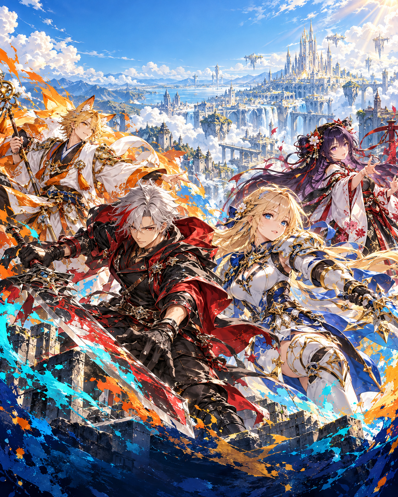
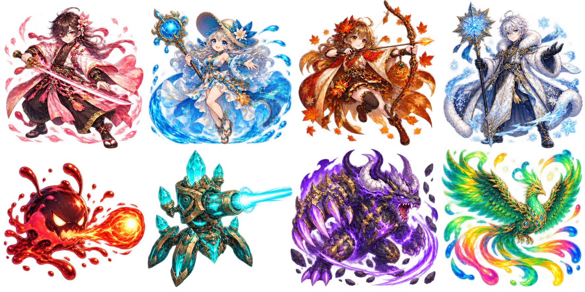

プレゼントボックス
チュートリアル完了報酬：ロードジュエル合計705個。1回だけ受け取れます。
11連1回＋ジュエル単発4回＋チケット単発2回で合計17回。残りは5個です。

進行状況はこのブラウザに保存されます
創作キャラクターを使用した非公式の試作ゲーム仲間とつなぐ、一撃の軌跡。
ロードジュエル 0個 ガチャチケット 0枚
帰る場所へ、色をつなごう。
提供された世界観をもとにした、制作版オリジナルの全11章です。事件・セヴランなどの新人物・会話・結末・戦闘は創作で、原作シナリオの再現ではありません。
自分のハンターで、CPUのハンターチームに挑戦しよう。
あなたが先攻。1ショットごとにCPUが1人行動します。CPU全員のHPを0にすると勝利、自分のチームHPが0になると敗北。CPUも反射・貫通、仲間への接触、ピンクの塗りを使います。CPUは4回行動ごとに専用の強化ショットを使います。
この対戦は制作版オリジナルです。チームHPに対戦用補正があり、CPUのHP・攻撃力は難易度で変わります。罠とグラ魂は使いません。通常のHSは使用できます。対戦報酬はなく、戦績だけ保存します。
ステージを選んだら、出撃前にチームとギミックを確認しよう。
会話 → 章バトル → 後日談。第11章の後日談まで読むとアルカナが加入します（制作版独自進行）。
グラスマのバトルの雰囲気に寄せた創作モンスターです。原作の敵名・種族分類・属性相性・個別の攻撃性能を再現したものではありません。敵の外見・名前・攻撃の予告を見て狙う順番を決めよう。属性は表示用で、属性によるダメージ増減はありません。
この一覧のキャラは通常・季節・チケット・チュートリアルの全ガチャから排出されません。原作の入手方法を資料で確認した12体です。全クエストの網羅一覧ではありません。
以下の出発先は3体の敵で構成する試作バトルです。原作の各降臨のステージ構成は再現していません。アルカナは制作版メインストーリー第11章の後日談まで読むと加入します。コイン10枚／勝利・30枚交換は独自仕様です。
最大4枠に、所持している仲間を配置。少人数でも出撃できます。変更は自動で保存されます。
所持数の範囲で、育成状態・対応アビリティ・役割を見て最大4人を選びます。
開始時は全キャラの所持数が0体です。最初の1体を選び、ガチャから仲間を迎えましょう。同じキャラの重複入手ができ、所持数まで同キャラを編成できます。育成はキャラの種類ごとに共有します。住人は画像閲覧用です。☆2・☆3の個別割当と戦闘性能は試作版独自仕様です。
全員に固有の技名・効果・演出を設定しました。12系統を基礎にした制作版オリジナルの技で、原作の個別性能は再現していません。別衣装・住人など画像閲覧専用枠の技は図鑑の演出サンプルのみです。
別衣装・コラボ・住人を含む創作ミニキャラです。ここは画像閲覧用で、編成は上のハンター図鑑から行います。
毎年の暦で切り替わる創作イベント。期間限定ガチャと季節チャレンジに挑戦できます。入手した限定キャラは期間終了後も使えます。
ボスHP300・取り巻きHP100。敵を全滅させて勝利。開催中のみ挑戦できます。毎日初回勝利でジュエル50個＋チケット1枚。日本時間0時更新。
画面を閉じている時間も経過します。帰還後にこの画面で受け取ってください。
ダンジョン報酬・遠征で入手。ハンターの「育成・装備」から武器の2スロットに装着できます。取り外すと所持数に戻ります。

すべて非公式の創作デザインです。敵の攻撃パターン・ダメージ・属性割当も試作版独自仕様です。
新しい仲間を、バベルへ。クエスト限定は排出しません。
所持 0体 / 0種類
排出対象は選択中のガチャ対象ハンターのみ。☆4 7%・☆3 38%・☆2 55%。各回独立抽選、11連も保証枠なし。最高排出は☆4（進化で☆5）。武器はダンジョンから入手します。
チュートリアル完了報酬：ロードジュエル合計705個。1回だけ受け取れます。
11連1回＋ジュエル単発4回＋チケット単発2回で合計17回。残りは5個です。
各公式ページを開き、この画面へ戻って報酬を受け取りましょう。各1枚・合計2枚。リンク先は当時の公式チャンネルです。
☆4 7% / ☆3 38% / ☆2 55%。各レアリティ内は均等。住人と別衣装ギャラリー専用キャラは排出対象外。☆2・☆3の割当はこの試作版独自です。入手経路が未確認のキャラは排出保留にし、確認済みのキャラのみを対象にしています。
リセマラ用。所持キャラ・ジュエル・チケット・武器・育成・クエスト進行を初期状態へ戻します。
効果音はこの画面かバトル中に切り替えられます。
進行状況・編成は同じブラウザに自動保存されます。タイトルへ戻っても消えません。